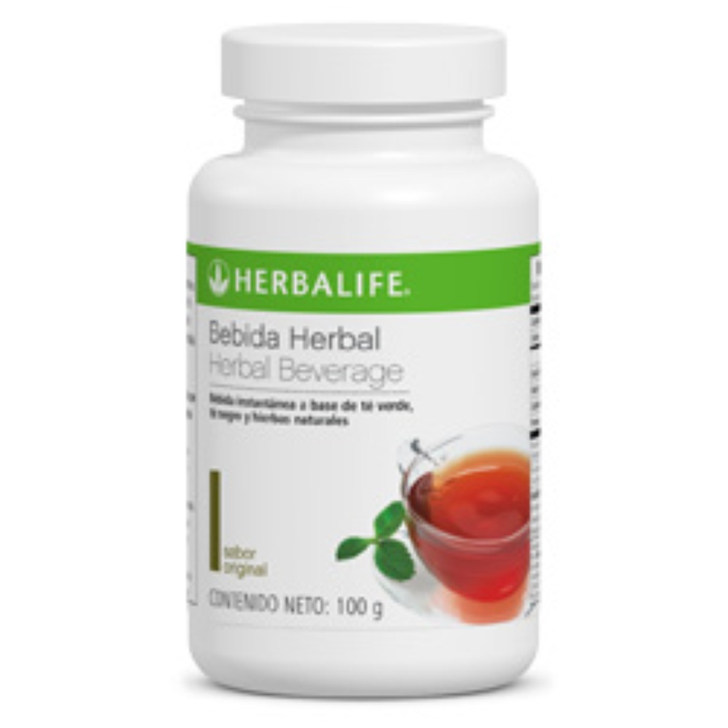

Volver al menú
Bebida Herbal (Té verde)
Está hecho a base de té verde, funciona como antioxidante y termogénico.
Podemos tomarlo frío o caliente y en diferentes sabores como:
- - Frambuesa
- - Durazno
- - Limón
- - Original
Contáctenos
Llámanos: 986 456 946
E-mail: e.cardozaq@gmail.com
E-mail: e.cardozaq@gmail.com
"Pregunta por tu descuento"